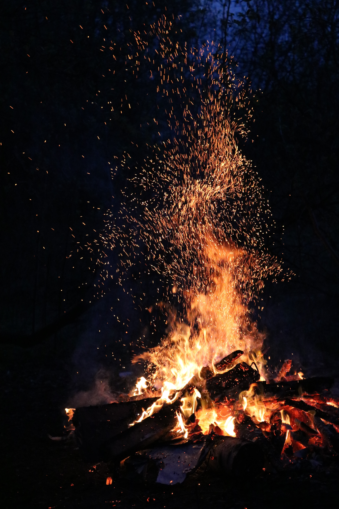

Watch Out For Fires!
By Fred Flames
Out here in Idaho, we live in the desert. Which means dry summers and lots of places to camp! While everyone loves roasting marshmallows for warm s'mores while you're hanging out in your favorite camping spot, it's important to be aware of the weather, your surroundings and any fire restrictions or warnings that have been put in place! We don't want those delicious s'mores causing a tragedy that would leave Smokey the Bear heartbroken. Below are the different fire danger levels that you should be aware of.
- Green: Low Risk. Enjoy those s'mores, but always be aware of your surroundings!
- Blue: Moderate Risk. Fires may start from accidental causes, but it's still generally safe to burn.
- Yellow: High Risk. Fires can get out of control very easily.
- Orange: Very High Risk. Fires will start easily and spread easily.
- Red: Extreme Risk. All fires will start quickly and burn intensely. They are very difficult to fight and can cause a lot of damage.
Please be aware and vigilant any time you start a fire, but especially when camping during the summer. Take note of the fire danger level, and if there are any burn restrictions in your area.
Fire Danger Levels courtesy of USDA Forest Service